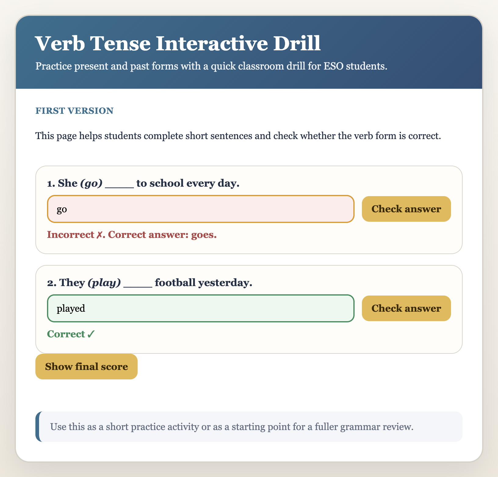

Justificación de la Tarea 3 (Acumulativa)
1. Objetivo de la mejora
La mejora de esta tarea se centra en aumentar el valor pedagógico del recurso: el alumnado recibe feedback inmediato, claro y contextual dentro de la misma página, sin interrupciones de ventanas emergentes. Esto permite corregir errores con información útil y continuar practicando de forma autónoma.
2. Cambios funcionales implementados
- El feedback aparece dentro de la página al pulsar Check answer (sin usar alert).
- Mensajes de resultado dentro del quiz: Correct ✓ o Incorrect ✗.
- Codificación por color del feedback: verde cuando acierta, rojo cuando falla.
- Resaltado visual de la respuesta escrita: fondo verde claro o rojo claro en el campo de entrada.
- Cuando hay error, se muestra la forma verbal correcta para facilitar la corrección guiada.
- Preguntas generadas dinámicamente desde un array de objetos (estructura mantenible y escalable).
- Contador final de aciertos al cerrar la actividad.
3. Evidencia de valor para el aula
Respecto a la versión anterior, el recurso ya no solo dice si está bien o mal: ahora ayuda a aprender en el momento del error, porque muestra la solución correcta y destaca visualmente qué respuesta revisar.
Impacto didáctico: más autonomía, menos frustración y corrección más rápida.
4. Cumplimiento de criterios de evaluación
| Criterio | Cómo se cumple en el recurso |
|---|---|
| Interacción, feedback o apoyo al aprendizaje | El alumnado escribe respuestas y recibe feedback inmediato en cada pregunta, más resultado final. |
| Mejora no solo estética | Se añade orientación pedagógica: feedback explícito, respuesta correcta al error y apoyo visual. |
| Se puede explicar qué cambia para el alumnado | Pasa de una corrección binaria a una corrección formativa y contextual dentro de la actividad. |
| Sin errores evidentes en consola | Se ha revisado la lógica y no hay errores detectados en el archivo principal. |
5. Evidencias técnicas (Git)
- Commit Tarea 3: cf93832 - Improve in-page learning feedback for Task 3
- Commit previo (idioma en inglés): ebaf552 - Set all UI messages to English
- Mejora dinámica previa: f3b2286 - preguntas dinámicas y contador final
6. Recursos entregados
- Código fuente actualizado en index.html.
- Repositorio en GitHub con historial de commits.
- Este documento PDF de justificación.
7. Captura del recurso en funcionamiento
Evidencia visual del feedback dentro de la página: se observa un caso incorrecto (en rojo, con la respuesta correcta indicada) y un caso correcto (en verde), sin ventanas emergentes.

Nota: la captura se ha obtenido del propio recurso ejecutado localmente para evidenciar el comportamiento final de la tarea.